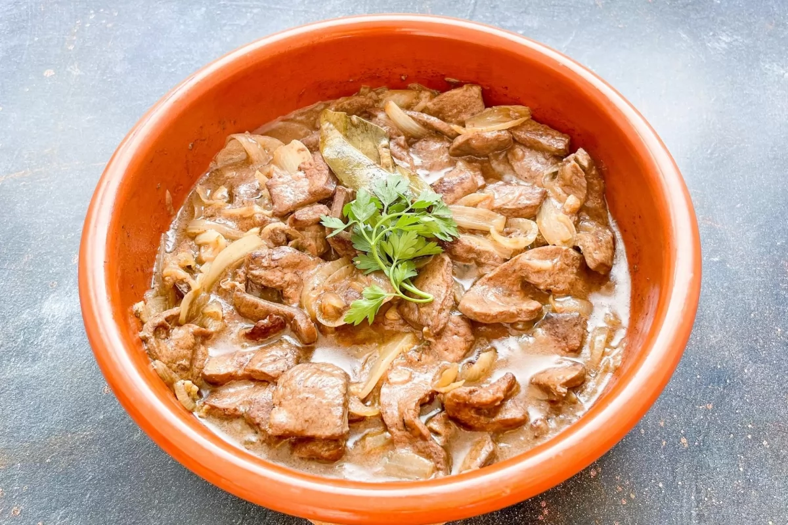

Siempre que cocinemos casquería, tenemos que asegurarnos de comprarla en carnicerías o puestos de despojos en mercados de confianza y que sean de buena calidad, si son de procedencia ecológica mejor. La limpieza, antes del cocinado, es importante, aunque en el caso del hígado no es necesario un remojo previo.
Esta receta es una de las tapas que podemos encontrar en los bares, bodegas y tascas con más trayectoria. La conjunción con la cebolla hace que el hígado pierda intensidad y resulte un bocado tierno y delicado.
Calentar en una cazuela 30 ml de aceite de oliva virgen extra. Cortar las 2 cebollas grandes en pluma, los 2 dientes de ajo en láminas e incorporar ambos ingredientes a la cazuela junto a una hoja de laurel. Salpimentar y cocinar a fuego suave durante 15 minutos. La cebolla tiene que quedar bien pochada, sin llegar a dorarse.
Trocear los 500 g de hígado de ternera en trozos regulares y tamaño al gusto, e incorporar a la cazuela junto a una cucharada de harina de trigo. Remover bien hasta que la carne haya cambiado de color por todos sus lados. Unos 5 minutos aproximadamente a fuego medio.
Verter los 100 ml de vino blanco seco y subir la temperatura del fuego para ayudar a que se evapore el alcohol. Cocinar durante 10 minutos y apagar el fuego. Si se cocina el hígado en exceso, se corre el riesgo de que se ponga duro y lo que se busca en esta receta es conseguir un bocado tierno.
Servir el hígado acompañado de unas hojas de perejil. El hígado encebollado es uno de los platos que gana intensidad y textura si se deja reposar en la nevera, un mínimo de 12 horas antes de su consumo. Lo más tradicional es servirlo en cazuela de barro pero en plato se ve maravilloso también.